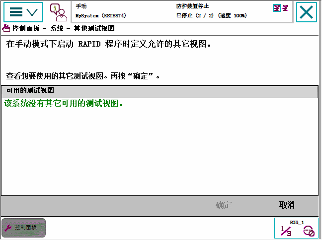

如果系统配有自定义操作员界面，该界面由一个或多个采用 FlexPendant SDK 开发的应用程序组成，那么用户可以在手动模式下从此类应用程序启动程序执行。 但是，如果没有此类应用程序，将显示添加其它测试视图的屏幕，如下图所示。
使用此程序定义其它测试视图。
操作
1
在 ABB 菜单上，点击 Control Panel（控制面板），然后点击 FlexPendant。
2
点击 Additional Test View（其他测试视图）。
显示的屏幕可能如下所示：

3
通常只有 Program Editor（程序编辑器）和 Production Window（运行时窗口）允许测试视图。如有其他视图可供选择，则这些视图将显示在列表中。选择一个或多个要用作其他测试视图的应用程序。
4
单击 OK（确定）。